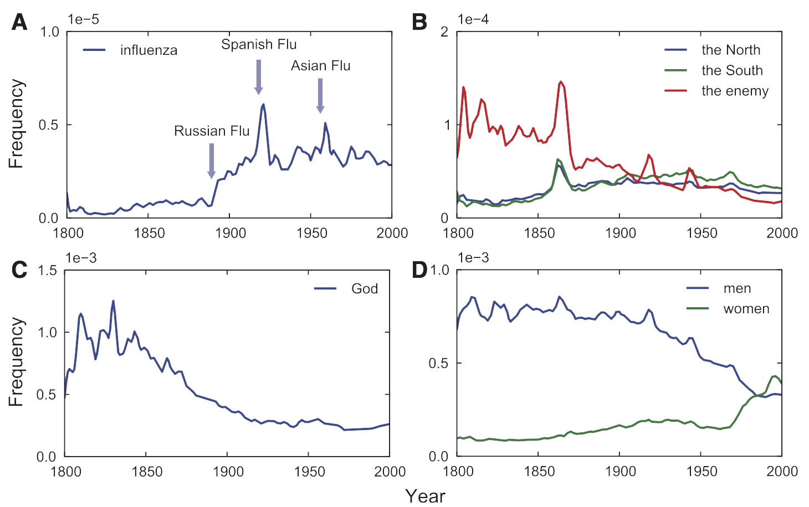

年后首次开工，继续关于数据与可视化的讨论。
前几天上网发现几家做在线数据分析的公司得到了融资。（比如，Statwing希望做一个非常简单易用，让普通用户能以可视化操作就完成统计汇总和各种相关分析、假设检验和可视化表达的平台，从而比EXCEL好看，比SPSS好用。，还有一家名叫Chartio的公司也做类似业务。）不过，我仍然认为想要从数据中看到不一样的东西，需要非常艰苦的努力加上点直觉。
TED上有一个演讲《我们从五百万本书里学到了什么》，算是对前面论述的一个精彩注脚。演讲的主角是Jean-Baptiste Michel和Erez Lieberman Aiden，他们所在的H大+Google的研究团队从Google电子化的一千五百万本书中选择了5,195,769本书（约占所有出版物的4%）建立语料库，语料库包含了五千亿个词，他们相信，通过将语料库数据化分析，可以用来研究文化的变迁，甚至他们创造了一个新词——Culturomics，来形容他们开创的领域。他们还将研究发表在Science上，名叫Quantitative Analysis of Culture Using Millions of Digitized Books，字少图多，通俗易懂，联合作者一共有十四位来自不同领域的专家学者。
要想从这些海量的数据中发现有价值的信息绝非易事，如果你仅仅试读一下2000年一年的英语语料库，每分钟200个词，不吃不喝不睡，你需要读八十年。把这些词首尾相连，可以来回月球十次。 研究者们的高明之处在于通过他们整理了数据，建立了一种研究方法——从出版物中探寻文化变迁，可以供后人们使用。
研究者们研究了许多文化现象，这里只举几个例子。以下图表除特殊说明外，均整理自上文提到的那篇论文。
图表纵轴代表使用频率，使用频率 = 这个词在该年出现的次数 / 该年语料库总词数

图1：（A）历史流行病学：流感一词的词频变化，我们可以看到波峰大多标志着大规模流感的爆发。所以有人认为现在Google在疾病监控方面的能力强于政府，因为从各地检索词的变化很有可能预测传染病的爆发，比如一个地区的人们在一定时间内对感冒，发烧，特定药物的检索量上升的话很有可能该地区正在爆发流感。（B）美国内战的演变。美国内战从1861年打到1865年，更多关于内战的信息可看WIKI词条。（C）神“God”一词的演变，神并没有完全死掉。（D）men和women一词的演变，女权主义的兴起，与男女平等的发展。
图2：（A）我们的遗忘速度。三条线代表三个不同的年份，1883年被遗忘的半衰期约30年；1950年被遗忘的半衰期只有10多年。我们正在加速遗忘过去。We are forgetting our past faster with each passing year.（B）Cultural adoption is quicker。新事物出现后会在更短的时间爆发。（E）1865年名人的曝光度，每组都有三个时期：出名前(median frequency < 10^(-9)）；名声大震，直到顶点；缓慢下降。有四个主要考查变量：（1）the age of initial rise（2）the doubling time of the initial rise（3）the age of peak celebrity（4）the half-life of the decline.（F）1800-1920年出生的25位不同职业的最有名的人世曝光度。政治家50左右开始成名，作家和演员成名较早，但作家出名的时长大于演员。（当时估计电视电影还都不发达。）想要出名千万别当数学家：）
图3：审查制度（C）1976年天安门出了点事儿，中文出版物中该词频飙升；1989年天安门又出了点事儿，英文出版物中该词频飙升。（D）不光中国，美国有个叫Hollywood Ten电影被和谐了，相关人员的词频大大下降，导演后来出走法国。（E）纳粹时期对文学、艺术等领域的压制。（F）研究人员弄了个压制指数，较复杂，不在此展开。
如果你对他们的研究感兴趣，Google已经开放了所有的原始语料库，并将一个比较简单的版本上线名为ngram，让我们拿奥威尔的名作《1984》试试这个ngram。
我检索了英文语料库里的Nineteen Eighty Four和中文语料库的1984，词频如下图所示。需要说明的是，奥威尔的这本书出版于1949年，但较晚才引入中国，中文语料库里1950年飙升的词频说明了什么？
再送上一个big brother与Big Brother的词频分析：
有部分链接可能需要翻墙，可参见以前的帖子。